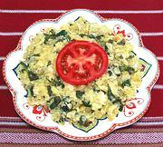

|
Eggs with PurslaneMexico - Huevos con Verdolagas | ||||
| Serves: Effort: Sched: DoAhead: |
2 break ** 20 min Prep |
A very tasty jumbled egg mix, one of my favorites. I use only a small amount of hot sauce to avoid masking the flavors. Substituting bacon for some of the lard won't hurt, either, but it can be made vegetarian. | |||
|
1/2 5 6 1/3 1 ----- |
c oz t T --- |
Purslane (1) Onion Eggs, ext large Salt Lard (2) -- Serve with Hot Sauce |
Prep - (10 min)
|